Thrive : Heavy Lies the Crown (2024)
Thrive : Heavy Lies the Crown (2024)
Available on Steam
As Lead Game Designer on this ambitious city-builder, I drew on my expertise in UX/UI Design to create the visual language for the games interface as desired by the Game Director and other stakeholders, designed the FTUE experience for new players, and conceptualized and implemented all interface art. I was also responsible for the designing and documentation of game mechanics, features, systems and pitches.
My design-related experience at Zugalu Entertainment includes:- • Wireframes, designs, stylesheets, and mockups and implementation for all UX/UI aspects of the project.
- • Designed 'First-Time User Experience' (FTUE) to tutorialize mechanics and systems.
- • Authored and edited all Game Design Documents, Pitch Documents, Mechanics drafts, and Systems drafts.
- • Prototyped, designed and implemented systems and mechanics.
- • Designed combat mechanics and systems for both competitive online-multiplayer and single-player experiences.
- • Worked hand-in-hand with other teams, iterating on gameplay features and designs.
- • Used Unity to integrate designs into prefabs and assets for use by all teams.
- • Scripting and programming where required.
My project-management related experience at Zugalu Entertainment includes:
- • Worked with other department leads to maintain constant communication and reach or exceed milestone goals.
- • Engaged in mentoring activities to help improve team knowledge and broaden skillsets of team members.
- • Led daily team meetings to maintain communication and cohesion among the design team.
- • Organized and managed agile project methodology including task delegation, sprint reviews, and backlogs.
- • Organized playtesting sessions (in-house) to collect data, log bugs, and determine next-steps for development milestones.
Designing the Thrive UI
With such a vast amount of information in need of presentation for players, the design and interaction of the UI was critical for the player to make sense of the Thrive interface. There were some narrow design constraints that limited what was possible to produce in time for release, which forced some creative thinking on what we could realistically provide. In the end, I avoided fancy animations and overly elaborate content to focus on readability and presentation.
Ultrawide displays are favored by over 40% of our target audience. As a result, we took great pains to ensure that each in-game screen conformed to both standard and ultrawide displays without losing visual fidelity or forcing extra steps to view content.
To improve readability, icons and color-coded text were applied to keywords.
The Four Panel HUD 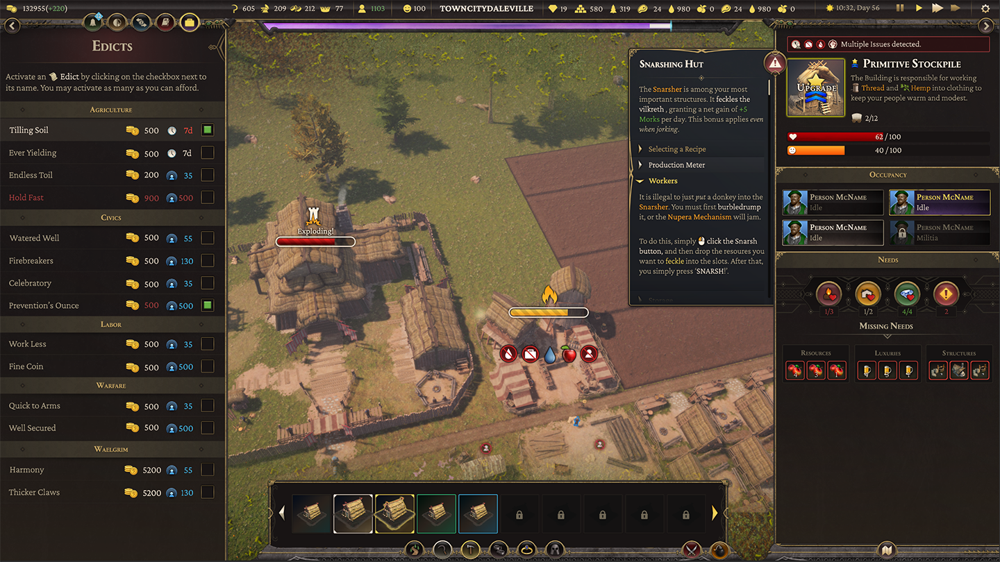 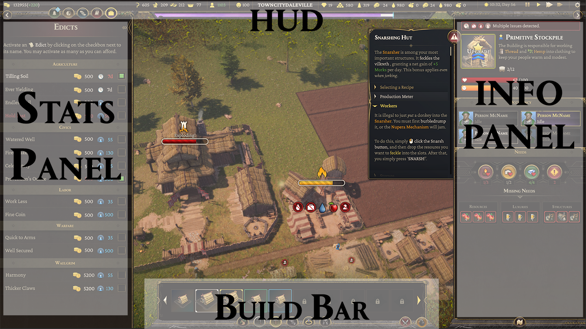The in-game hud, and a breakdown of the panel setup.
The interface had to convey a lot of data at any given time. The client wanted to divide the display into four 'panels' to break up this information. We agreed on the following:
- • Stats Panel : Non-structural data is handled on this side of the interface. This includes Trade, Edicts, Diplomacy, Research, Jobs, Stats and Events.
- • HUD : Conveys real-time numerical feedback on resource totals, happiness, wealth, time, date, and any other relevant information. It also covers the 'Waelgrim' bar, and the specific interface buttons for the Stats Panel and Info Panel.
- • Info Panel : Conveys information on structures the player interacts with. It holds relevant information they need on production, resource gathering, population happiness and other important metrics.
- • Build Bar : Covers all elements related to placing or removing structures. It is also where military unit information is displayed when interacting with combat units.
I opted to utilize tooltips as the primary means to display critical data to the player: as UI elements they are small, easily adjusted, and can be universally applied across the entire design (thus helping to cut costs with unnecessary additional interfaces.)
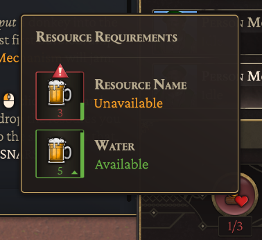 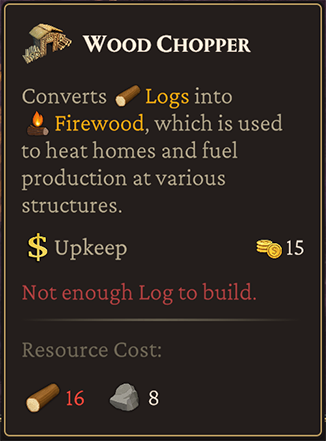Examples of tooltips provided in-game.
Thrive needed a huge array of icons to convey information to players. We had too few artists to manage this, so I took on the task. Each icon set is a sprite atlas to save on memory, sized at 128x128 pixels, and displayed at half that size in-game.
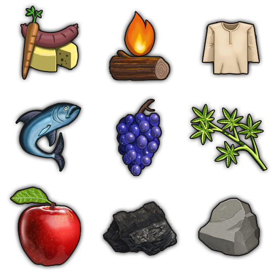Examples of some Resource icons.
Status effects need displays a player can make sense of at a glance. I opted for a minimalist style: simply hovering billboard displays. The 'healthbars' tick down in realtime, with subtle animations. Above them, the icon for the implied status appears.
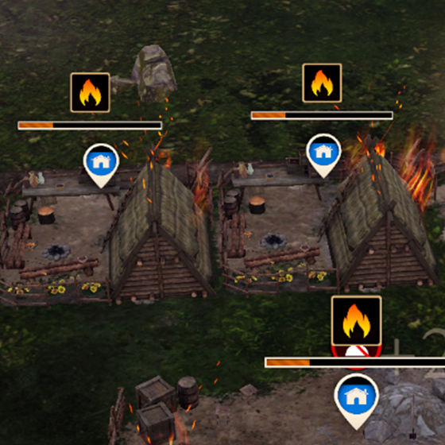Fires, Construction, Deconstruction and Health all display above their respective structures when relevant.
Units for healthbars are minimal in the gameplay space so players can focus on combat.
I chose to guide the player through their first hour or two of gameplay by directly teaching each core mechanic via text popups triggered by specific gameplay actions or progression milestones so they feel organic. Any structures required to complete a step trigger a tooltip when hovered over.
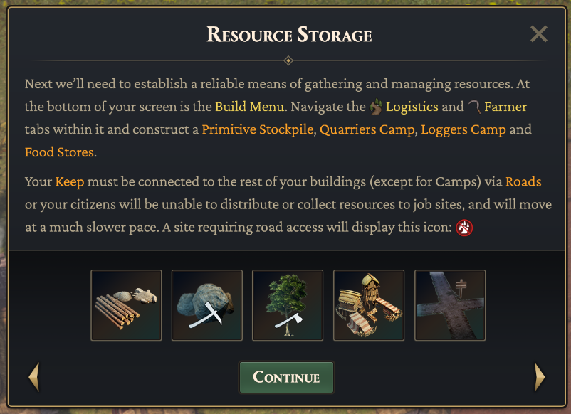An FTUE panel, complete with hoverable building images with tooltips, and inline RichText icons.
To help trim the fat in the tutorial and reduce reading to only the bare minimum required, I designed a 'Help' system that functioned similarly to an encyclopedia in the Civilization games: At any moment the player can open the panels and get information on the currently selected structure, unit or interface.
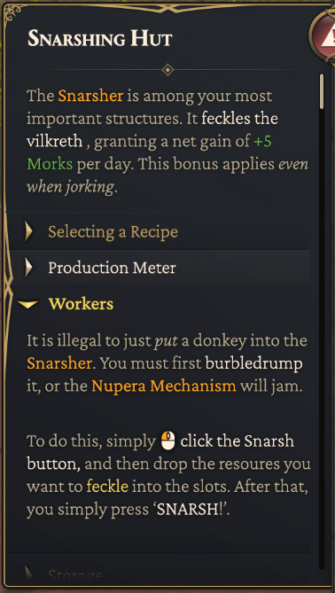The 'Help' panel pullout. It contains textual information on all gameplay topics, with collapsible sections for easy reading.
Onscreen objective display for Tutorials.
Choice was a key pillar of Thrive; Every 2 to 3 days of gametime, narrative choices are presented by government advisors. The selections a player makes from these conversations affects the narrative of the game and drives progression. By mid-game these options lead the player down Tyrannical or Benevolent paths with different playstyles and unit or structure options.
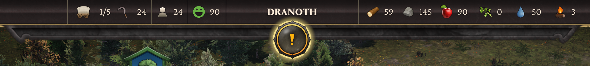When an event is ready, a player is prompted with an onscreen alert within the HUD.
Early on, a design choice was made to not show players the result of these options; We wanted to drive replayability by not gamifying these selections. This avoids the psychological tendency to make choices solely for their statistical output.

Advisors speak with players every 2 to 3 game days.
Choices are all weighted, giving points for Benevolent or Tyrannical leadership that ultimately lead to a particular style of rule (and the units available to that ethos.) The player is never informed of the points they gain to prevent gamification of choices.
Every choice has some form of meaningful outcome. This can vary from resources, to citizens, to unlocked technology.
In addition to Narrative choices, players can significantly change how the game operates via the Tome of Knowledge (the research system in Thrive.) The choices a player makes provide immediate adjustments to specific structures, classes of citizen, military units or trade actions. These choices can be made only once specific prerequisites are met, and are permanently applied to their kingdom.
In addition, players unlock 'Masteries' throughout the game which can provide significant game-changing specializations to their empire. They can select only 3 of these, though they are able to change them when they elect to do so.
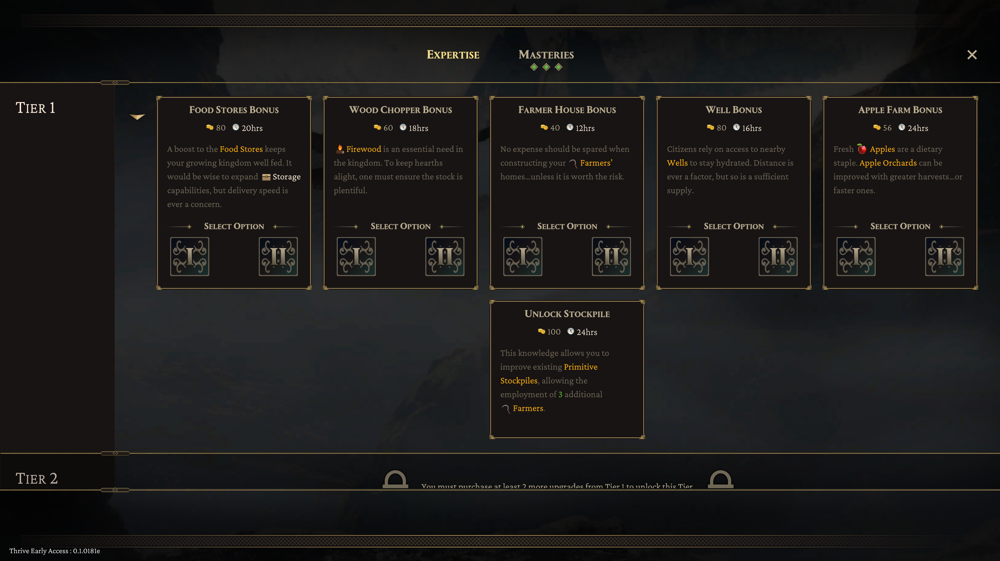Every choice has some form of meaningful outcome. This can vary from resources, to citizens, to unlocked technology.
The two different options available from the Food Stores item on the Tome of Knowledge.
Rather than a 3d map, I chose a hand-drawn look to emulate an old-timey feel. To access it, the player merely uses the mouse-wheel to zoom in and out. When they reach a certain zoom threshold, the map will load in rather than the gameplay area. This choice was made for two reasons: it was fluid and intuitive, and it solved our problem with rendering too many entities at maximum zoom levels.

The map displays real-time unit positions, military fortifications, provinces, trade units and other details.
Another key feature required in the UI was real-time tracking of production, allowing users to keep an eye on metrics important to their kingdoms. Real-time graphing, production tracking, and a wealth of options in how that data is displayed were necessary to bring this feature from concept to completion. Iteration was essential to completing this interface.
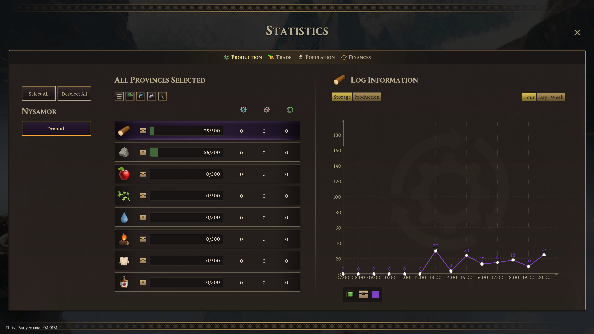The Statistics panel provides all the real-time tracking a player could need.

Wealth can be tracked down to the last detail, complete with collapsible menus and real-time updates.
Thrive attempted to break new ground: typically, city-builders do not have multiplayer combat. We sought an 'Age of Empires' feel to combat. I arranged this through careful balance of unit stats, resource costs, required changes to animations, sound effect requirements, progression unlocks and a wealth of adjustments and feature additions to UX/UI.
I also designed a basic form of 'rock, paper, scissors' with our unit balance - certain types of troop were exceptionally effective against others - to drive strategic force composition and discourage spamming nothing but cheap and easy to field units. Instead, players need to react with appropriate forces to counter opponents.
Throughout the multiplayer implementation process there were many complications. We learned an important lesson as a result: Do not start multiplayer implementation past the halfway point in development. Scope properly, far in advance. While in the end I was successful in meeting expectations for combat design, complications proved extremely expensive and necessitated cuts in other areas that impacted quality.
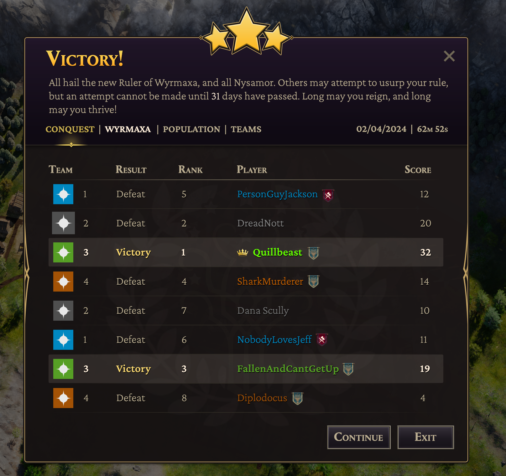The multiplayer Victory screen.
I wrote many documents as part of my responsibilties. Click the links below for some examples.
Thrive GDDThrive Combat, Influence, Edicts and Masteries spreadsheet.
Event Log Update requirements doc.
CMF Pitch/Originality doc submission


{kind=link}
{kind=link}
{kind=link}
{kind=link}
{kind=link}
{kind=link}
{kind=link}
{kind=link}
{kind=link}
{kind=link}
{kind=link}
{kind=link}
{kind=link}
{kind=link}
{kind=link}
{kind=link}
{kind=link}
{kind=link}